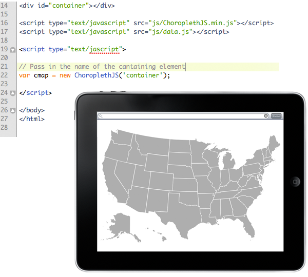
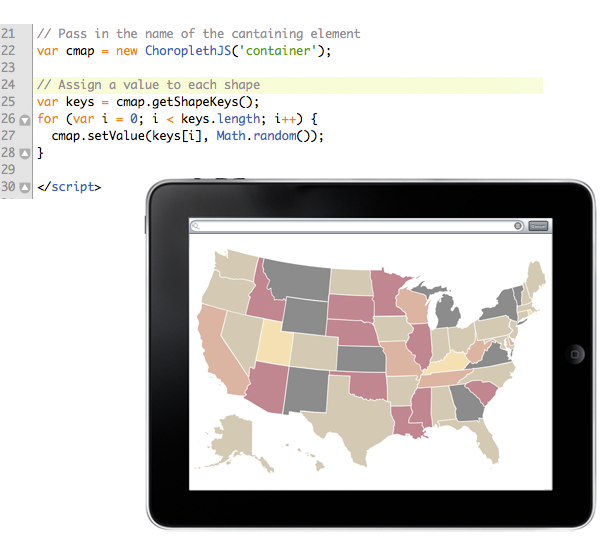
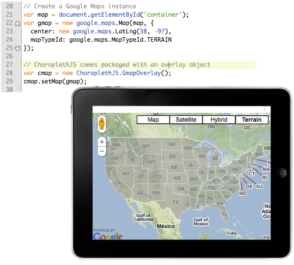

Getting started is easy. ChoroplethJS comes with dependencies bundled. Include the library and you're ready to go. Next >

Color your map by assigning a value to each shape. Use ChoroplethJS.getShapeKeys() to get an array of keys. Next >

ChoroplethJS gives you plenty of options for customizing the look of your map. Next >
- fill: The default color of each shape.
- fillOpacity: The default opacity of each shape.
- stroke: The default stroke color of each shape.
- strokeOpacity: The default stroke opacity of each shape.
- scale: The initial scale ratio of the map.
- projection: The ChoroplethJS.Paths object to use.
- colors: An array of colors used when colorizing the map.
- speed: The time (in milliseconds) it takes to fade the map colors in.
ChoroplethJS comes ready to be integrated with Google Maps. Next >

ChoroplethJS API reference. Next >
- scaleTo(value, [callback]):
Scales the entire canvas by the specified multiplier value. - reset()
Resets the color of each shape on the map to the value of options.fill. - setValue(key, value)
Assigns a value and corresponding color to a shape. - getShape(key)
TGets a Raphel shape objet from the current map. - getShapeKeys()
Returns an array with the keys of each shape in the current map.